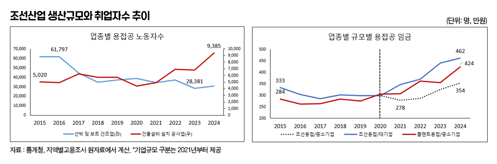

박영삼의 통계로 보는 노동
“조선소는 왜 최저임금만 줘야 하나요?”
얼마 전 더불어민주당이 야심차게 기획한 정책토론방 ’오피큐알-모두의 질문Q(https://q4all.kr/about)’에 올라온 글이다. 질문을 올린 사람은 <쇳밥일지>를 쓴 조선소 노동자이자 작가인 천현우씨였다. 천 작가는 “무시할 땐 언제고 이제 와서 지역과 제조업을 살리자느냐”며 조선소를 떠나는 청년들이 돌아올 수 없는 이유에 대해 “문제는 하청노동이고 핵심은 임금격차”라고 말했다.
그는 ’젊은 사람들이 힘든 일을 기피해서’가 아니라 “하청으로 들어오면 최저임금 수준을 벗어날 수 없고 10년 뒤 자신의 임금이 어떻게 되는지도 알 수 없기 때문”이라고 토로했다. 22년 경력의 용접공인 유최안 금속노조 거제통영고성조선하청지회 부지회장이 최저임금을 받는 현실을 얘기하면서 제시한 대안은 “하청노동자들도 적정한 임금을 받을 수 있어야 하고 숙련을 임금에 반영할 수 있도록 임금구조를 개선해야 한다”는 것이었다. 그가 올린 월급명세서에는 총지급액 241만원에서 소득세와 4대 보험료, 피복비와 간식비 등 37만원을 공제하고 남은 204만3천370원이 찍혀 있었다.
조선소 하청노동자들의 열악한 처지는 어제오늘의 일은 아니다. 하지만 최근 조선업 경기가 살아나면서 숙련노동자 부족 문제가 다시 제기되고 외국인 노동자들의 유입이 대폭 확대되는 상황에서 이 문제가 또 불거져 나온 것이다.
그렇다면 지난 십여년간 조선업 현장에서는 어떤 일이 진행됐고 지금 상황은 어떤 상태에 있을까. 공식 통계로 확인해 봤다.
1996년 344만CGT(표준적인 화물선을 기준으로 배의 건조에 필요한 작업량을 상대지수로 환산한 단위)였던 우리나라의 선박 건조량은 2011년 1천628만CGT로 5배 규모로 성장하면서 생산량 측면에서 최고점을 찍었다. 조선산업은 수주에서 선박 인도까지 수년의 기간이 걸리기 때문에 주문과 생산, 인력투입에서 시기별로 차이가 발생한다. 수주잔량이 최고치를 기록했던 시점은 2008년(수주잔량 3천738만CGT)이었지만 선박 건조량이 최고치를 기록했던 것은 2011년(1천628만CGT)이었고, 노동자수가 가장 많았던 시기는 그보다 3년이 더 지난 2014년이었다.
정부의 고용통계에서 조선업(선박및보트제조업)이 별도로 구분되기 시작한 것도 이때부터다. 하지만 2015년 15만4천999명이었던 조선업 종사자는 2021년 9만7천669명으로 6만명 이상 급감하게 된다. 이와 함께 조선업에서 가장 많은 수를 차지하던 용접공은 6만명 이상에서 3만명 미만으로 절반 이상 줄어들게 됐다. 그들은 거제와 울산·목포·군산을 떠났고 일부는 평택과 화성·용인 등지의 건설플랜트 현장으로 일터를 바꿨다. 낮아진 임금, 오르지 않는 임금에 기대를 접고 조선업 현장을 떠난 것이다.
이 시기에 조선업과 플랜트산업의 임금도 역전됐다. 2015년까지만 해도 조선소 용접공의 임금은 건설 부문의 용접공보다 훨씬 높았다. 하지만 2020년에 두 산업의 용접공 임금은 데드크로스 지점에서 만났고 그 이후 점점 더 격차를 벌리고 있다.

그렇지만 같은 조선업이라고 해도 대기업 조선소의 정규직 용접공들은 건설플랜트는 물론 자동차 조립라인 노동자들에 비해서도 결코 낮은 임금을 받지 않는다. 그들은 조선업이 최정점에 달하던 시기 자동차산업 노동자들보다 더 많은 임금을 받았고, 2016년 이후 조선업 침체기에 뒤처지긴 했지만 최근 다시 옛 지위를 회복하고 있다.
하지만 중소 하청업체에서 용접공으로 일하는 노동자들은 예나 지금이나 거의 변함없는 임금수준을 강요당하고 있다. 심지어 조선 경기가 살아나는 지금 시점에서도 평균임금이 하락하는 추세를 보이기도 한다. 최근 외국인 노동자 도입이 급속히 확대된 영향도 무시할 수 없다. 법무부와 고용노동부가 윤석열 정부하에서 가장 많은 공을 들인 것이 외국인 노동자 비자의 다양화와 도입 규모 확대였다.
’배를 건축하는 산업(ship building)’이라는 점에서 조선업은 제조업이면서 건설업의 특징을 많이 갖고 있다. 시기별로 투입인력의 규모가 달라지기 때문에 비정규직 비중이 높은 것도 비슷하다. 1960~70년대 우리나라 조선산업의 고용량 조절방식은 직접고용하는 임시공 형태가 지배적이었다. 그리고 그들의 임금은 대체로 정규직 본공보다 높게 책정됐다. 항상 일거리가 있는 것이 아니기 때문에 높은 일당을 쳐줘야 했고, 그들의 기량이 본공보다 더 나았기 때문이다. 더구나 그들은 하나의 노조에 속해 있었다. 1968년 대한조선공사 파업은 임시공이 중심이 된 투쟁이었다.
지금도 조선산업 노동자들은 대부분 뛰어난 기술을 갈고 닦은 숙련공들이다. 기술 없이 하청 일을 맡을 수도 없다. 하지만 언제부터 그들은 업체 소속을 달리하고 있고 서로 다른 노조에 속하거나 가입할 수가 없다. 당연히 교섭을 요구할 수 없다.
오늘날 파견·용역, 특수고용·플랫폼 등 다양한 고용형태에서 노동자와 사용자의 범위 확대가 과제로 떠오르고 있지만, 아주 범위를 좁혀 말하자면 원청 대기업을 상대로 당당하게 교섭을 요구할 수 있는 최우선의 주체는 누가 뭐라고 해도 조선산업 하청노동자들이다. 그들에게 필요한 것은 최저임금이 아니라 업체에 상관없이 조선업에 공통적으로 적용될 수 있는 표준임금이다. 그것이 그들이 숙련공으로 제대로 대우받으면서 한국 조선산업이 되살아날 수 있는 가장 빠른 길이기도 하다.
고려대 노동문제연구소 노동데이터센터장 (youngsampk@gmail.com)